2018-05-10
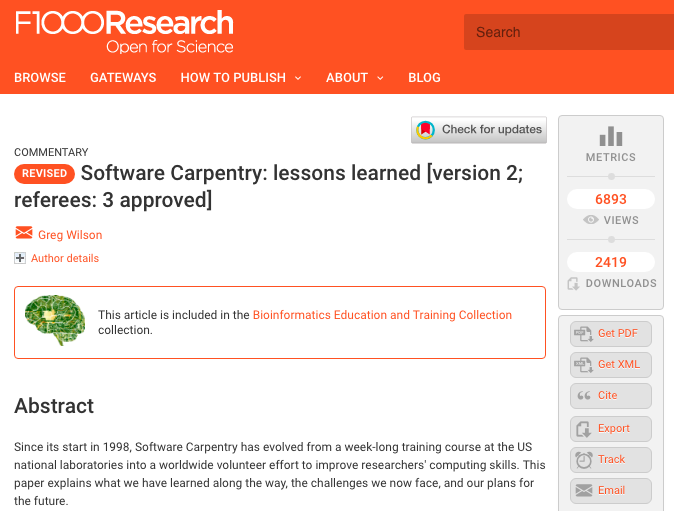
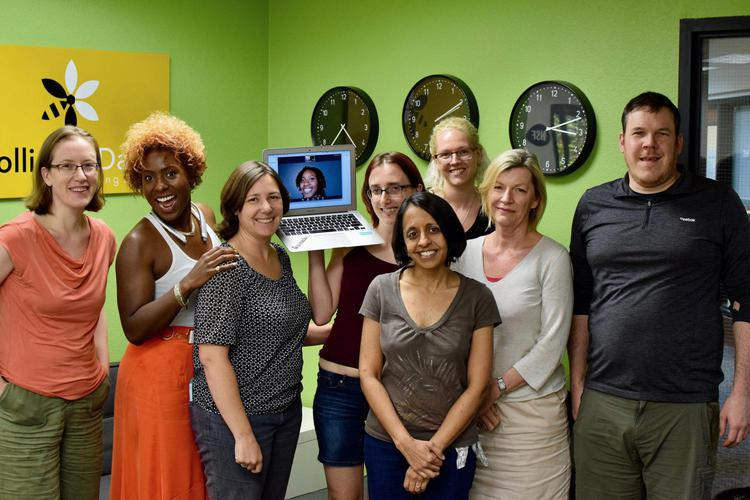
2018-12-17: write Carpentry talk.
2018-01-01: write Carpentry talk.
2018-02-01: write! Carpentry! talk!
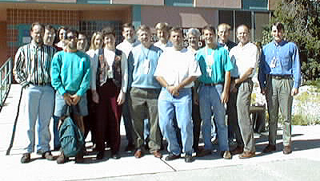
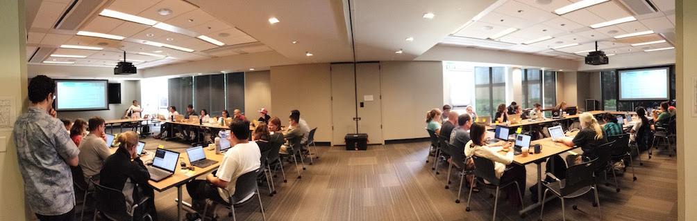
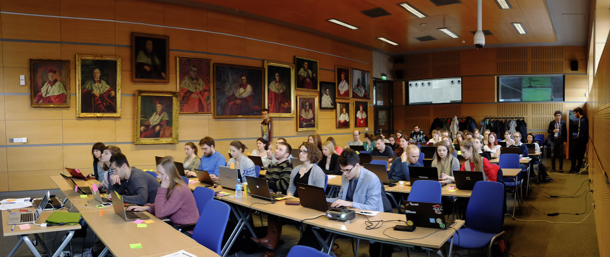
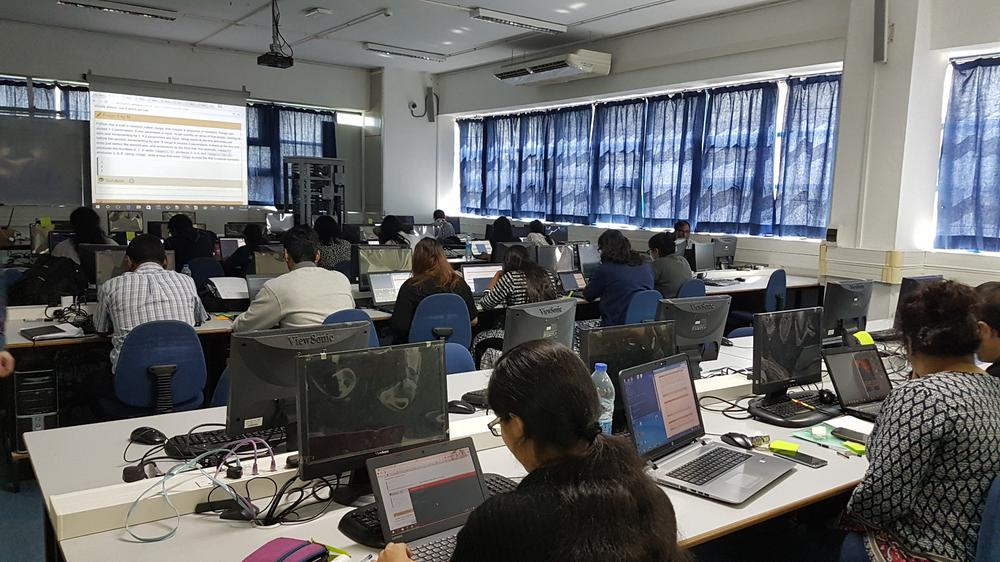
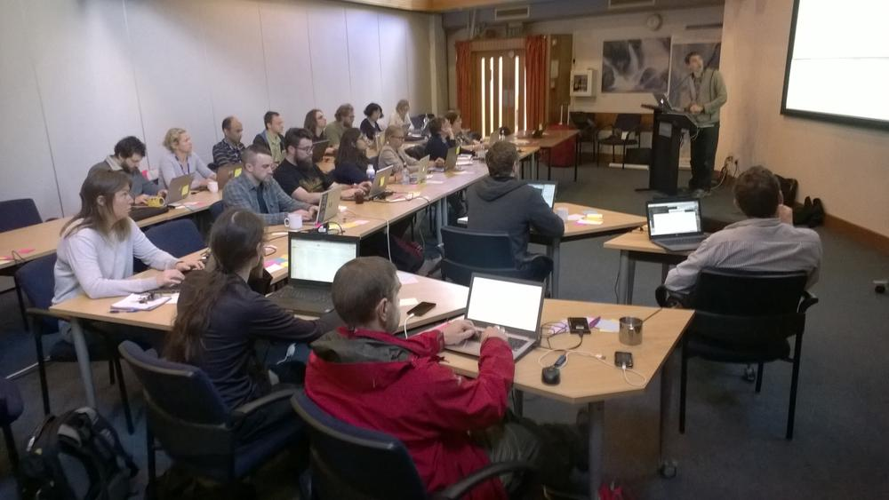
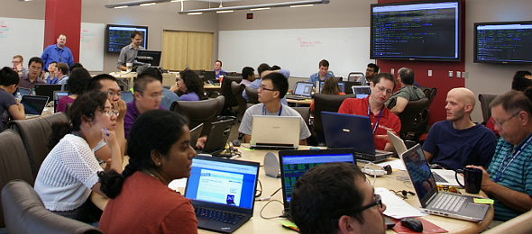
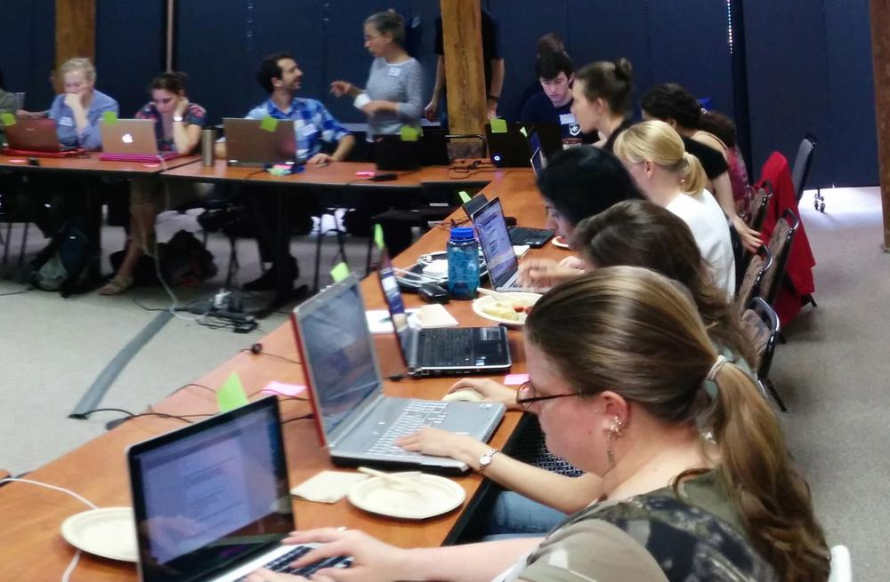
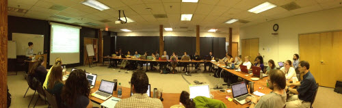
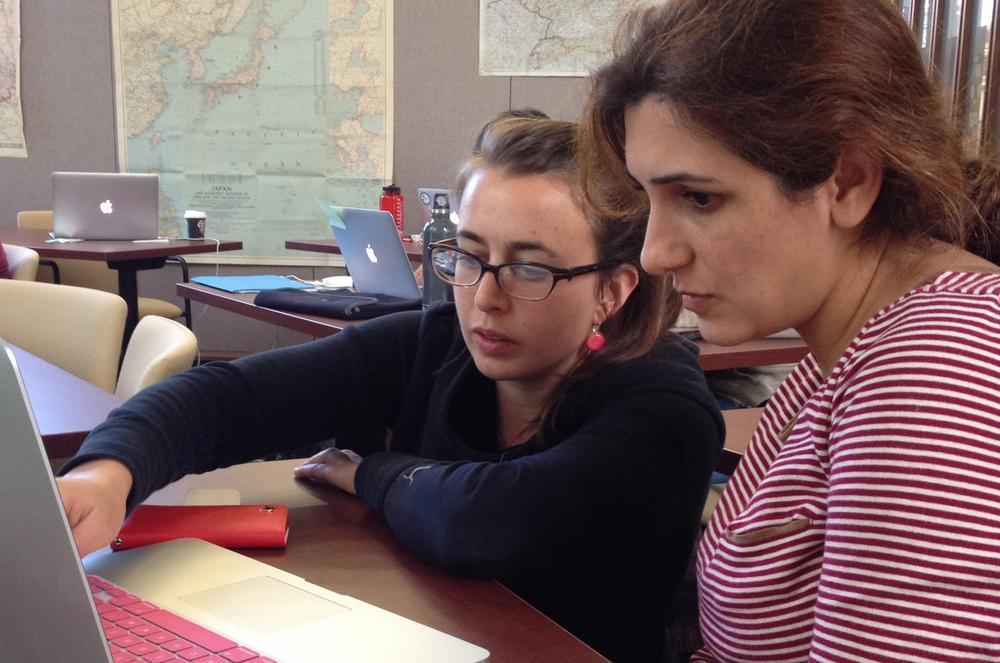
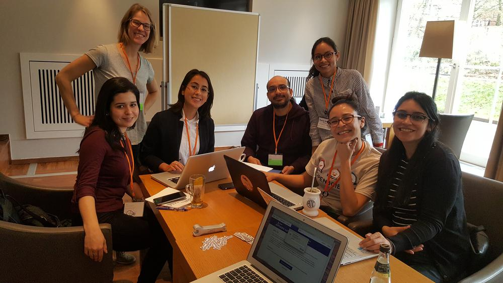
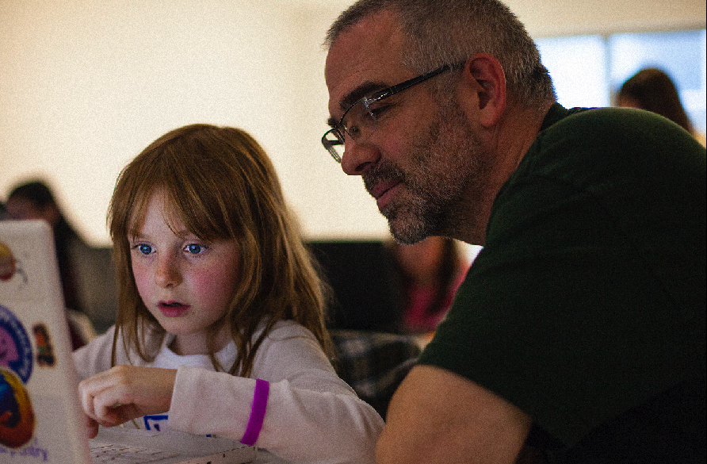
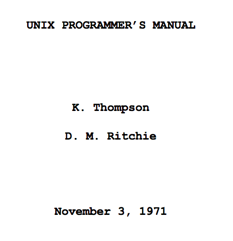
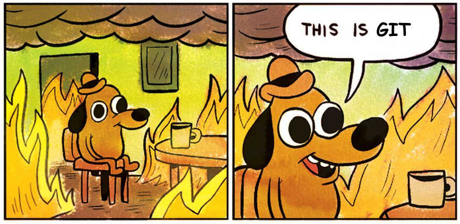
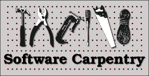
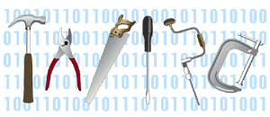
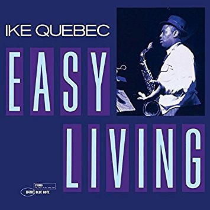
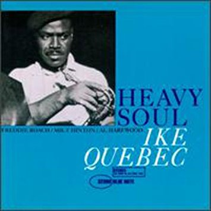
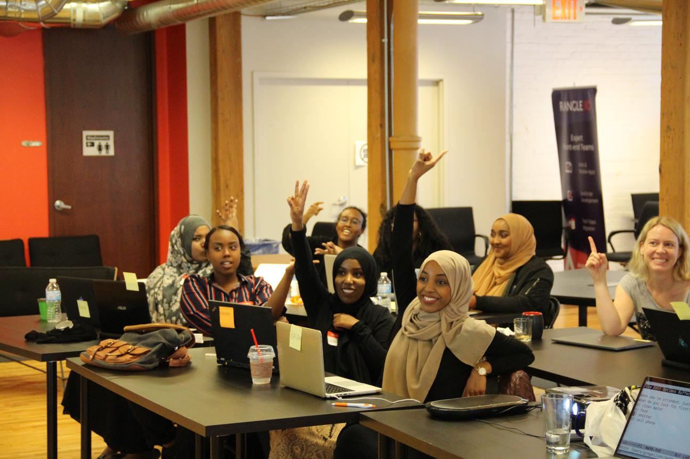
<p>Spaced practice</p>
<p>Retrieval practice</p>
<p>Elaboration</p><p>Interleaving</p>
<p>Concrete examples</p>
<p>Dual coding</p><img src="../../files/talks/bpco.jpg" alt="Building Powerful Community Organizations" width="80%"><img src="../../files/talks/late-night/t3-2018.jpg" alt="T3 workshop April 2018" width="50%">
<br>
<img src="../../files/talks/late-night/t3-logo.png" alt="T3 workshop logo" width="50%">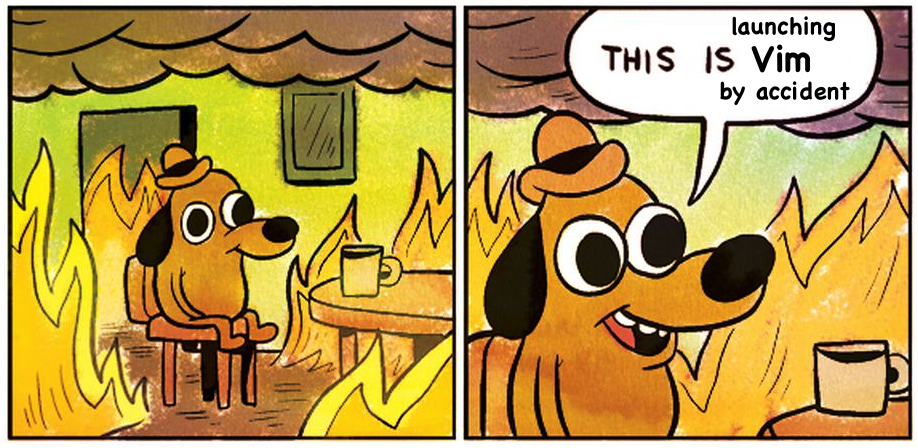
If you wish to make
an apple pie from scratch,
you must first
invent the universe.
– Carl Sagan
Nothing worth having
comes without some kind of fight.
– Bruce Cockburn
Barker et al: “What Influences CS Faculty to Adopt Teaching Practices?” 10.1145/2676723.2677282, 2015.
Bauer et al: “An Introduction to Implementation Science for the Non-Specialist.” 10.1186/s40359-015-0089-9, 2015.
Borrego & Henderson: “Increasing the Use of Evidence-Based Teaching in STEM Higher Education: A Comparison of Eight Change Strategies.” 10.1002/jee.20040, 2014.
Remember, you still have a lot of good times in front of you.
– Jeff Wilson
start where you are · use what you have · help who you can